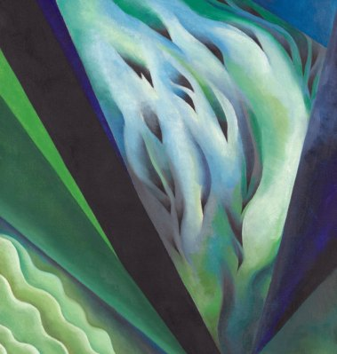

Georgia O'Keeffe · 1919/21
Blue and Green Music
[The work's short description from the API goes here, two to four sentences.]
- Medium
- Oil on canvas
- Origin
- United States
- Credit
- Art Institute of Chicago
Five colors pulled from the painting
The palette
{{status}}
Try it before you take it
The palette in use
Six quick layouts built only from these five colors. Each one notes which color it uses as the ground.
Pairs and contrast
Aa
{{p.name}}
{{p.verdict}} {{p.ratio}}
{{p.verdict}} {{p.ratio}}
Proportion study
A study in five colors
Each field is sized by how much of the canvas that color covers, so you can see the balance O'Keeffe struck, not just the list. Mostly a dark plum ground, a deep green carrying the middle, and only a sliver of teal.
- {{r.role}}
- {{r.pct}}
From five colors to a full system
Tints and shades
Every color stretched into nine steps, mixed toward white and toward black. The painting's own color sits at 500. Click any step to copy it.
{{r.role}}